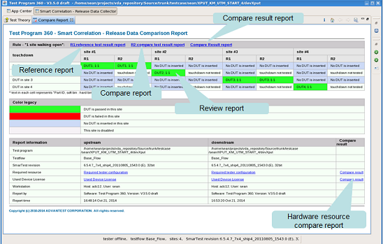
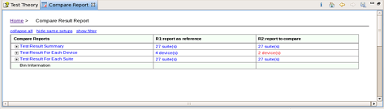
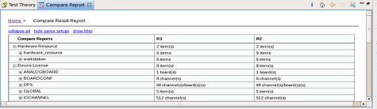

Compare Release Reports
Compare the generated release reports to find out the difference between them.
Before you begin
Make sure:
- You use the "S&S_TP360_Plus_SOC" license.
- You have two release reports generated by Collect Release Data.
Procedure
-
Click the
 button in the Specify a release report as reference row.
button in the Specify a release report as reference row.
A dialog opens, in which you can select the reference release report.
-
Click the button in the Specify a release report for comparison row.
A a dialog opens in which you can select a comparison release report.
-
If you want to customize the options for report generation, click the
 icon to open the Preference page on Smart Correlation - Release
Data Collector, and then configure the preference setups.
icon to open the Preference page on Smart Correlation - Release
Data Collector, and then configure the preference setups.
Results
The Smart Correlation HTML report is generated in the directory /tmp/.vda/username/tpsc/Compare_Report/ and displayed in the report view.

Click Compare Result report to get the details of the differences.

Click Compare resource to get the details of the differences of the hardware resource.

Functional changes
- Introduced in SmarTest 7.3.2